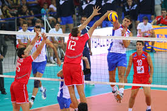

Moim zainteresowaniem jest gra w siatkówkę. Jest to bardzo ekstytujący i fascynujący sport. Zasady tej gry są dosyć proste. Gra polega na tym że mamy 2 drużyny po 6 osób(czasami 7 jeśli gramy z libero). Jedna drużyna jest po jednej stronie siatki, druga jest po drugiej. Każda drużyna musi odbić 2 razy piłkę i za 3 razem ją przebić na drugą stronę. Każda osoba ma swoją pozycję na boisku. Mamy przyjmujących, czyli osoby które bronią jak są w drugiej lini i atakują jak są w pierwszej linii na boisku. Mamy też rozgrywajacęgo jest to osoba, która zazwyczaj stoi na środki siatki i wystawia (odbija piłkę sposobem górnym) do któregoś z atakujących. Kolejną pozycją jest libero. Jest tylko jedna taka osoba na boisku. Zawsze stoi w 2 linni i przyjmuję wszystkie piłki, które są w jej zasięgu. Następną pozycją jest atakujący. Osoba na ataku powinna kończyć akcję.
Najlepszym zakończeniem akcji jest atak. Jest to najlepszy sposób, ponieważ jest najagresywniejszym podaniem i przeciwnej drużynie najtrudniej będzie odbić taka piłkę. Możemy też zakończyć akcję kiwką, czyli takim lekkim odbiciem piłki na drugą stronę. Kiwka powinna przelecieć blisko drugiej strony siatki, taka jest właśnie trudność kiwki, bo przeciwna drużyna musi się wysilić i podbiec do piłki żeby ją odbić. Najgorszym zakończeniem akcji jest przebicie piłki sposobem górnym lub dolnym. Nazywa się to piłką za darmo, bo tak przebitą piłkę przeciwna drużyna odbije bez problemu a następnie może wykonać bardzo dobrą akcje i zdobyć punkt. Każda akcja w secie rozpoczyna się zagrywką. Jest to agresywne zagranie na drugą stronę siatki, nie można przekroczyć linni końcowej boisku przy zagrywce.
Mecz siatkówki kończy się 3 wygranymi setami po 25 punktów. Wyjątkiem jest gdy mamy wynik 2;2 w setach to wtedy jest tie break, czyli taka dogrywka, w której trzeba zdobyć 15 punktów żeby wygrać.Kolejnym wyjątek jest wtedy gdy mamy wynik 24:25, ten wynik nie kończy meczu. Drużyna, która ma 25 punktów musi zdobyć jeszcze jeden punkt, żeby wygrac. Nazywamy to przewagami.
 dodatkowe informacje